WELCOME TO
KANGRA VALLEY
INTRODUCTION
Tira Sujanpur is located at 31.83°N 76.50°E.[1] It has an average elevation of 562 metres (1,844 feet).
Climate here varies all through from very hot summer to cold winter. Being on the bank of river Beas, the winter is quite severe. The temperature vary from 38Deg C in summers to almost zero Deg C in winters. Winters experience low lying clouds which add to the cold weather and one can enjoy walking amidst the clouds.
Sujanpur Tira is well-connected to all the major towns of Himachal Pradesh and of the country in all the directions through road network. It is at stones’ throw to Hamirpur (25 km), Palampur (35 km) and about 120 km from Dharamshala. Today over 200 buses cross this town to connect various other cities, villages and towns besides regular taxis. The nearest railway station is Maranda (near Palampur) where narrow gauge runs up to Pathankot on one side and Jogindernagar to the other. On one side it is connected to Una-Nangal by road, the other side it is connected towards Kangra, Pathankot; To Mandi-Manali and Ladakh and one side to Shimla. Its geographical locations connect this town with almost every direction through web of tarred road network.
About a decade ago, Sanik School was opened in Sujanpur Tira which is located in the green ground in the middle of the town. This has increased the importance of the town.
 DEMOGRAPHICS
As of 2001 India census, Tira Sujanpur had a population of 7,077. Males constitute 55% of the population and females 45%. Tira Sujanpur has an average literacy rate of 89%, higher than the national average of 59.5%: male literacy is 84%, and female literacy is 76%. In Tira Sujanpur, 11% of the population is under 6 years of age. sujanpur is the only city in hamirpur where tourists can visit. the police staion of sujanpur is one of the oldest police stations of himachal pradesh. the ground of sujanpur is the biggest ground of himachal pradesh. Natioinal level holi fair of sujanpur city is famous in all over country.
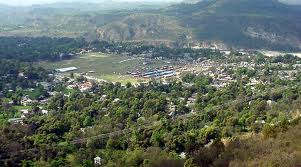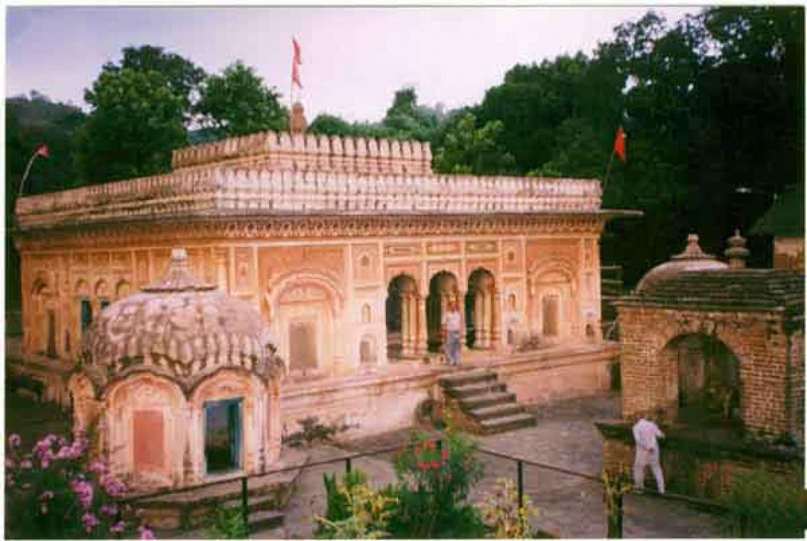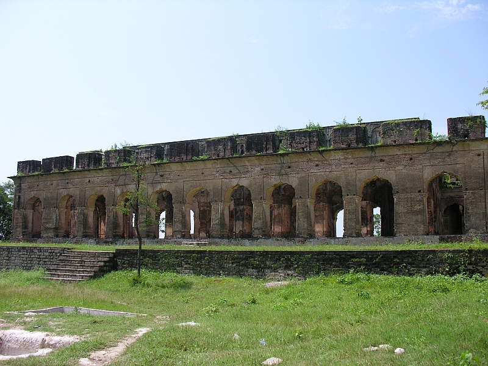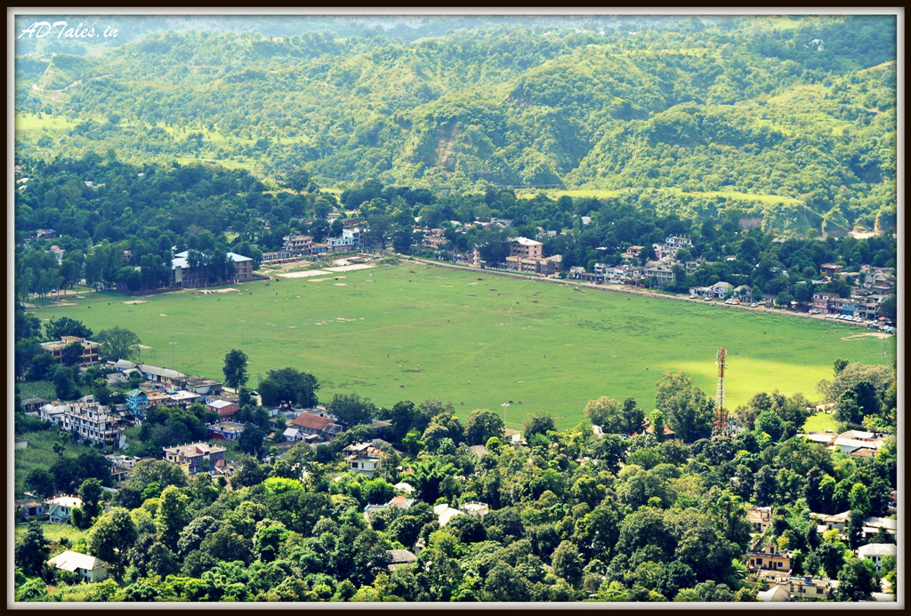
DEMOGRAPHICS
As of 2001 India census, Tira Sujanpur had a population of 7,077. Males constitute 55% of the population and females 45%. Tira Sujanpur has an average literacy rate of 89%, higher than the national average of 59.5%: male literacy is 84%, and female literacy is 76%. In Tira Sujanpur, 11% of the population is under 6 years of age. sujanpur is the only city in hamirpur where tourists can visit. the police staion of sujanpur is one of the oldest police stations of himachal pradesh. the ground of sujanpur is the biggest ground of himachal pradesh. Natioinal level holi fair of sujanpur city is famous in all over country.
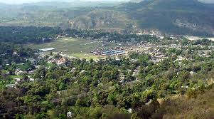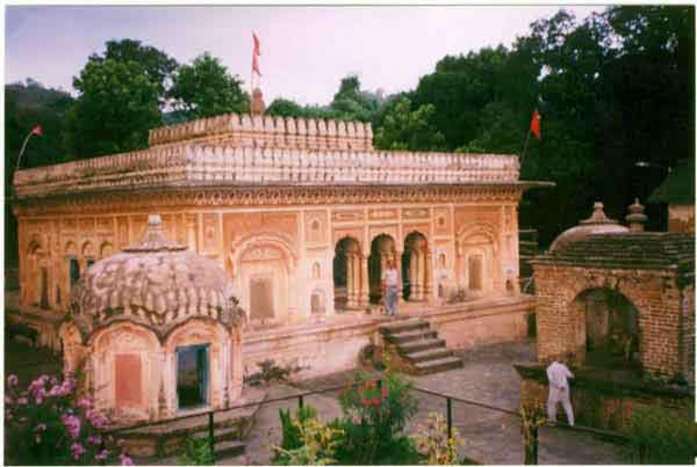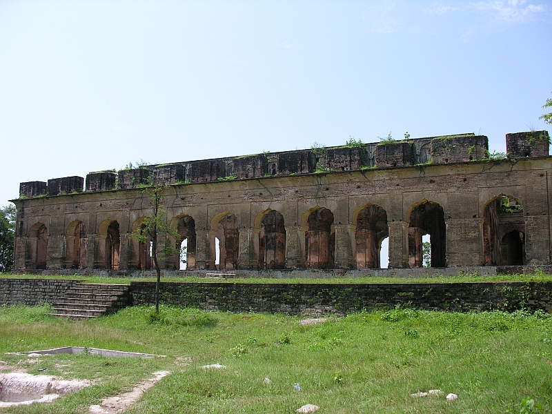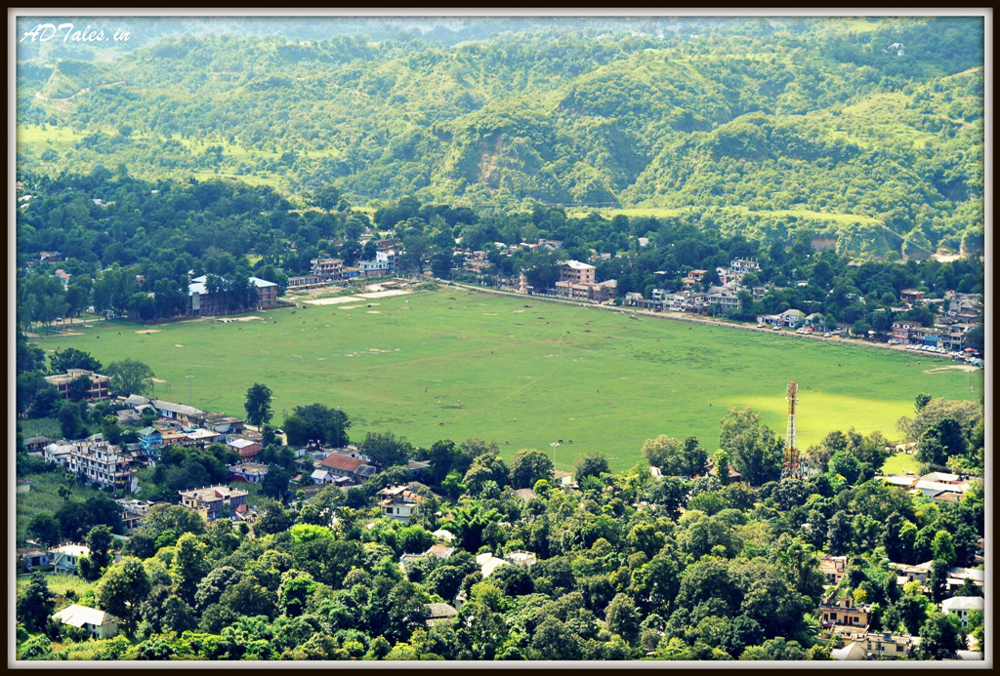 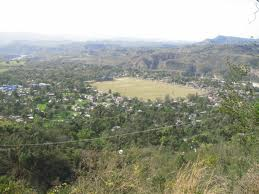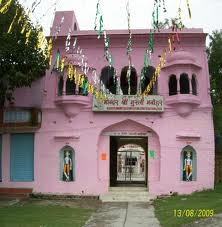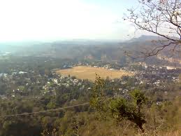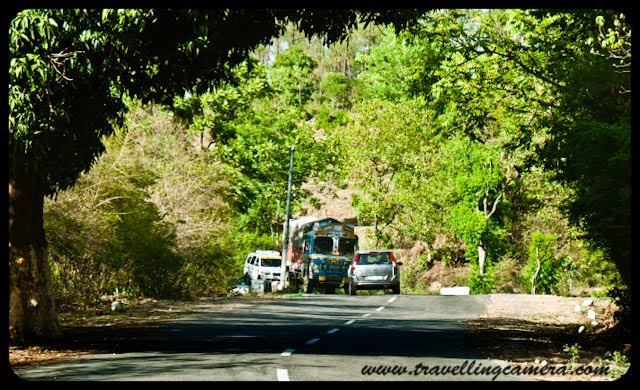
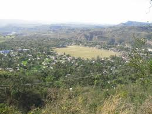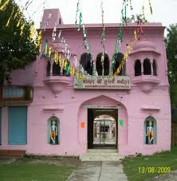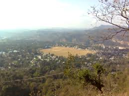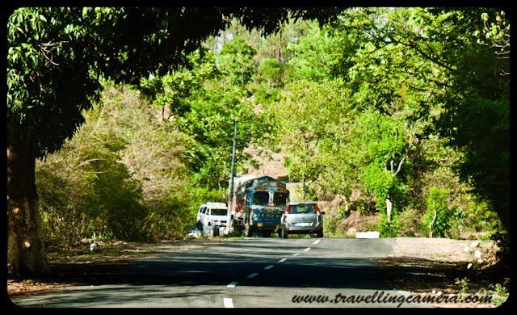
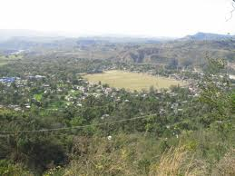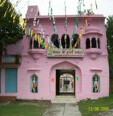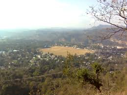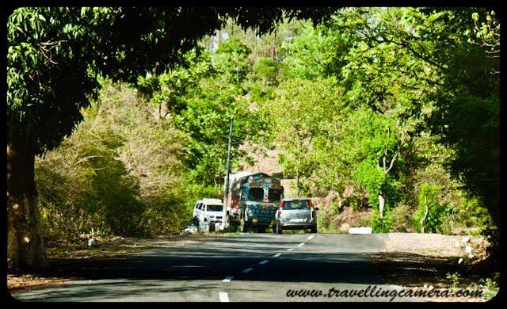